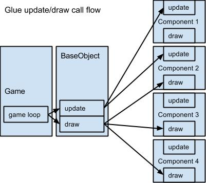

Glue is a component based game engine. She contains multiple pre-made components you can combine to create your game object behave in the way you want to. Glue lets you easily create your own components to be able to specify specific behaviour.
In order to easily combine multiple behaviour components you can create a base component which will exhibit those behaviours. A base component can be created using the component module. You can pass along as many other components into the component module her constructor. Your component will incorporate all the other components (behaviours) you pass along. After that you can chain the add method and pass in an object which will represent your actual component.
The Glue game loop will keep on calling the draw and update methods on your base component as soon as you add her to the game. If some of the behaviours need to have update or draw methods called as well, you need to call these as well from your base component. You can see this call flow in the diagram below.

Basically a BaseObject is a container for multiple components. Creating a BaseObject is really easy. For example, here you can see how an empty BaseObject is created.
var object = BaseObject();
If we add this to our game it will not show any behaviour. To make it work we need to add components to our BaseObject. There are different types of components, you can even create your own custom components. In this example you will see how to use the Visible component which displays an image on the game screen.
var object = BaseObject(Visible).add({
init: function () {
this.visible.setup({
position: {
x: 0,
y: 0
},
image: Loader.getAsset('myImage')
});
},
draw: function (deltaT, context) {
this.visible.draw(deltaT, context);
}
});
If we add this object to our game it will draw an image at (0, 0). For each component you mix in the BaseObject you will get a property with the same name of the component. As you can see in the previous example the property to access the Visible component is "this.visible". Through this we can use every method and property of that component. On the previous example you can see how Visible is dependant of the draw method to display the image. This is also something that applies to every other component, even the custom ones you make. For example if I need to update a movable component, it should be done like this:
var object = BaseObject(Visible, Movable).add({
init: function () {
this.visible.setup({
position: {
x: 0,
y: 0
},
image: Loader.getAsset('myImage')
});
},
// We add this.
update: function (deltaT) {
this.movable.update(deltaT);
},
draw: function (deltaT, context) {
this.visible.draw(deltaT, context);
}
});
As soon as we add this, the movable component will be updated.
You can read more about components and the creation of custom components in the components section.